IIS全称为Internet Information Service(Internet信息服务)，它的 功能是供信息服务，如架设http、ftp服务器等，是WindowsNT内核系统自带的，不需要下载。
IIS是一种web服务组件，其中包括web服务器(网页浏览)、ftp服务器(文件传输)、NNTP服务器(新闻服务)和SMTP服务器(邮件发送)等，它使得在网络(包括互联网和局域网)上发布信息变得容易。
搭建IIS服务器
控制面板->程序->启用或关闭windows功能->勾选Internet Information Services(将应用程序开发功能的所有选项都选中，否则IIS搭好以后只能挂HTML这种静态网页)
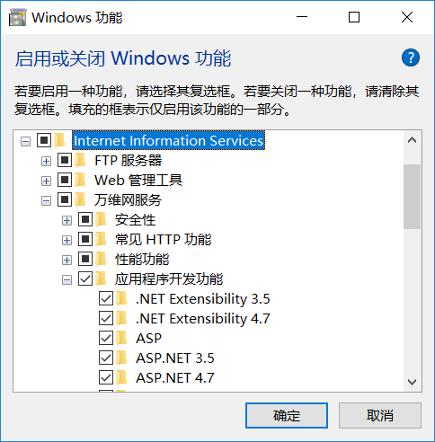
完成后点击确定，windows自动安装IIS功能，安装完成后，在C盘根目录下会自动生成inetpub文件夹
所有程序->windows管理工具->Internet Information Services(IIS管理器)
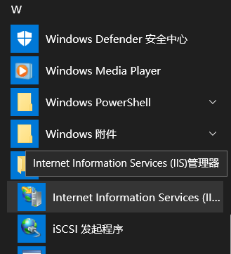
打开IIS管理器->找到Default Web Site->右键选中管理网站->启动
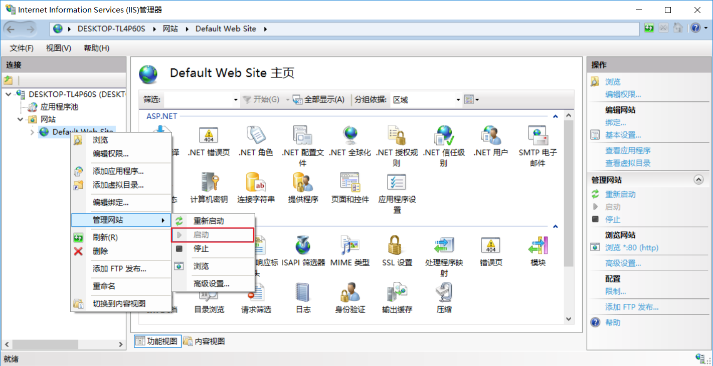
访问http://localhost，出现如下界面，说明成功了
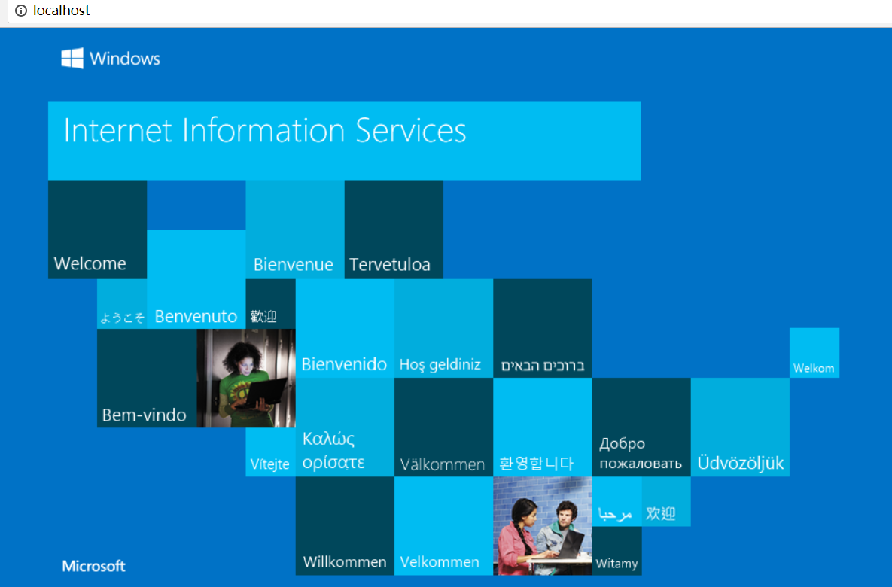
IIS服务安全设置
身份验证
身份验证是验证客户端身份的行为，并控制客户端对资源的访问能力。一般情况下，客户端必须提供某些证据，一般称为凭证，来证明身份，通常是用户名和密码。
- 匿名访问
如果启用了匿名访问，访问站点时，不要求提供经过身份验证的用户凭据。当可以让用户公开访问某些没有安全要求的信息时，使用匿名访问最为合适。用户尝试连接网站时，IIS会将该连接分配给IUSR_ComputerName账户，其中ComputerName是运行IIS的服务器名称，默认情况下，IUSR_ComputerName账户为Guests组的成员，密码为空。设置方法如下
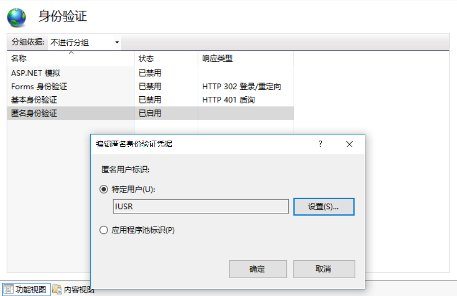
注：如果启用匿名访问，IIS 会始终先使用匿名身份验证来尝试验证用户身份，即使启用其他身份验证方法也是如此，也就是说启用匿名身份验证后其他验证方式也会失效。
- 基本身份验证（以明文形式发送密码）
基本身份验证需要用户 ID 和密码，提供的安全级别较低。用户凭据以明文形式在网络中发送。这种形式提供的安全别很低，因为几乎所有协议分析程序都能读取密码。但是，它与大多数 Web 客户端兼容。如果允许用户访问的信息没有什么隐私性或不需要保护，使用此选项最为合适。
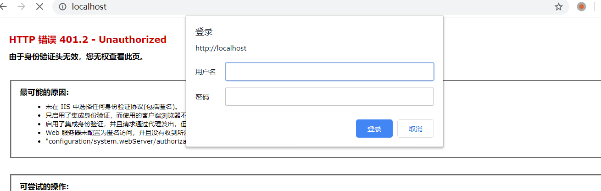
- 集成Windows身份验证
提供较高的安全级别，以前称为 NTLM 或 Windows NT 质询/响应身份验证。要使用此方法，客户端必须使用 Microsoft Internet Explorer 2.0 或更高版本。另外，不支持通过 HTTP 代理连接进行 Windows 集成身份验证。
简单来说使用这个验证方法在访问网页时需要输入用户名和密码，用户名和密码是windows服务器的账户和密码，且在浏览器的声明周期内只需输入一次密码
- NET Passport 身份验证
.NET Passport 身份验证提供了单一登录安全性，为用户提供对Internet 上各种服务的访问权限。如果选择此选项，对IIS的请求必须在查询字符串或Cookie中包含有效的 .NET Passport 凭据。如果IIS不检测 .NET Passport 凭据，请求就会被重定向到 .NET Passport登录页。由于只有ASP.NET应用程序才能使用此验证方式所以不再演示。
注：如果选择此选项，所有其他身份验证方法都将不可用（显示为灰色）。
权限控制
权限控制可以通过文件权限进行设置，由于IIS账户隶属于Guests账户，可以设置整个Guests账户或只设置IIS账户，对于上传目录一定要禁止执行权限，仅赋予读写权限。
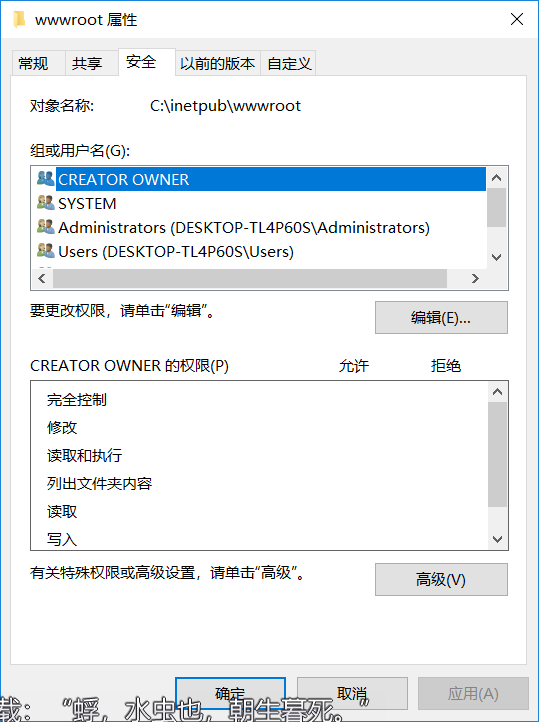
应用程序池
应用程序池是将一个或多个应用程序链接到一个或多个工作进程集合的配置。因为应用程序池中的应用程序与其他应用程序被工作进程边界分隔，所以某个程序应用池中的应用程序不会收到其他应用程序所产生的问题的影响。工作进程隔离模式防止一个应用程序或站点停止了而影响其它应用程序或站点，大大增强了IIS的可靠性。应用程序池的搭建比较简单，直接在左侧“应用程序池”右键选择“添加应用程序池”即可。
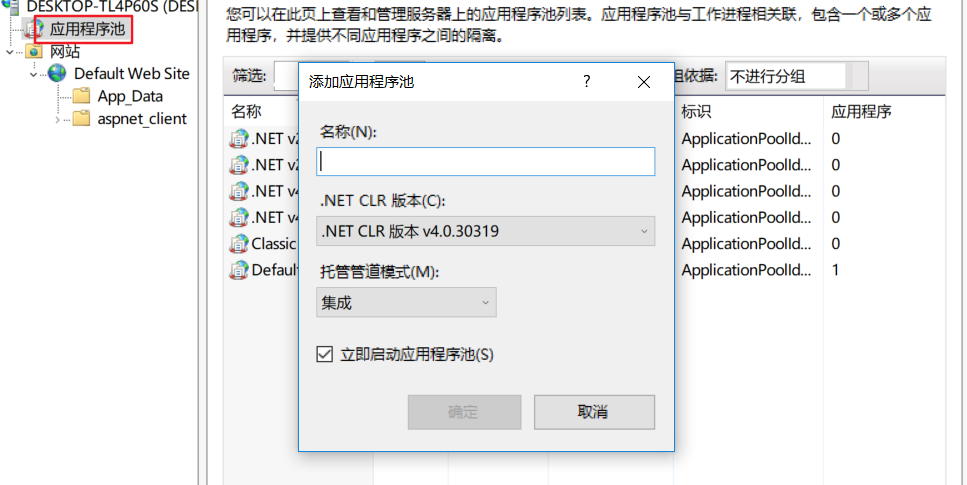
新建应用池程序后，可为网站添加不同的应用池程序
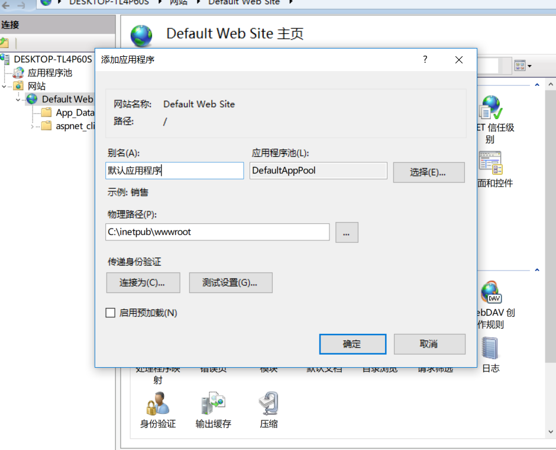
IIS日志
可对日志计划和格式等进行修改，也可以选择禁用日志
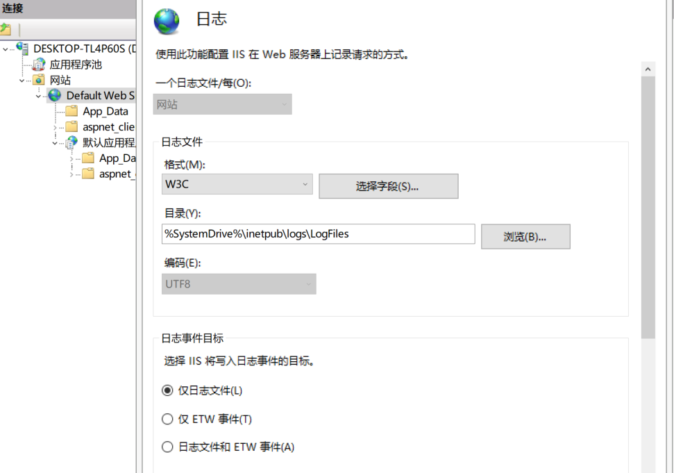
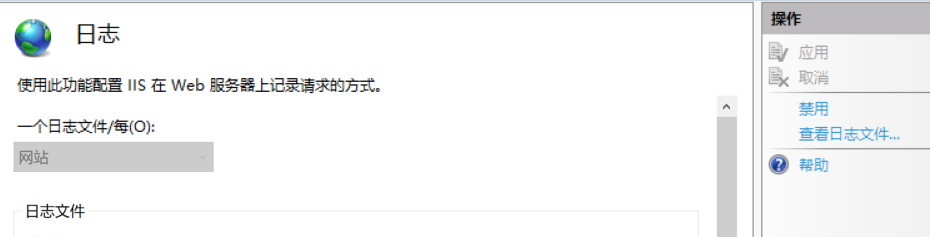
日志格式1
2
3
4
5
6
7
8
9
10
11
12
13
14
15
16
17
18
19
20
212019-05-16 11:19:30 ::1 GET /aaa.html - 80 - ::1 Mozilla/5.0+(Windows+NT+10.0;+Win64;+x64)+AppleWebKit/537.36+(KHTML,+like+Gecko)+Chrome/74.0.3729.131+Safari/537.36 - 200 0 0 522
日期：2019-05-16
时间：11:19:30
用户名：-
服务器端口：80
方法：GET
URI资源：/aaa.html
用户代理：Mozilla/5.0+(Windows+NT+10.0;+Win64;+x64)+AppleWebKit/537.36+(KHTML,+like+Gecko)+Chrome/74.0.3729.131+Safari/537.36
协议状态：200
协议子状态：0
Win32状态：0